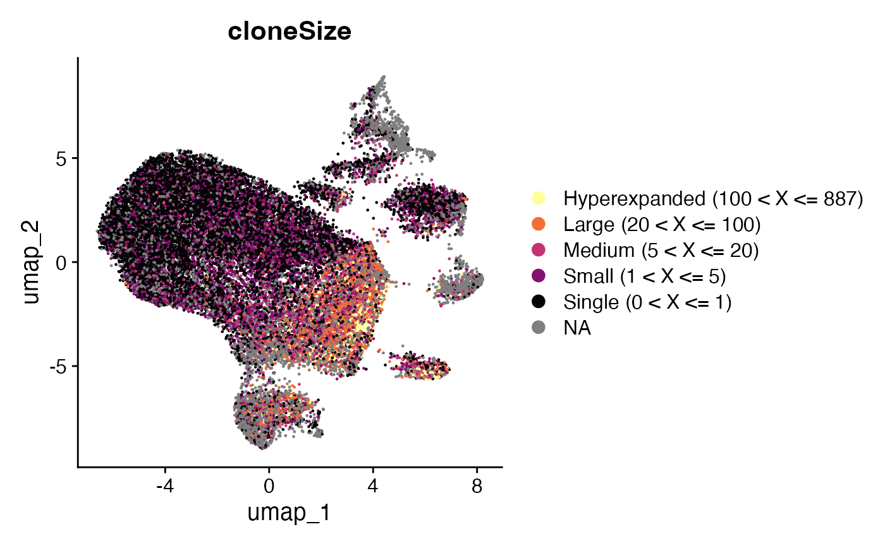

Combining Clones and Single-Cell Objects
Compiled: April 03, 2026
Source:vignettes/articles/Attaching_SC.Rmd
Attaching_SC.RmdNote on Dimensional Reduction
In single-cell RNA sequencing workflows, dimensional reduction is typically performed by first identifying highly variable features. These features are then used directly for UMAP/tSNE projection or as inputs for principal component analysis. The same approach is commonly applied to clustering as well.
However, in immune-focused datasets, VDJ genes from TCR and BCR are often among the most variable genes. This variability arises naturally due to clonal expansion and diversity within lymphocytes. As a result, UMAP projections and clustering outcomes may be influenced by clonal information rather than broader transcriptional differences across cell types.
To mitigate this issue, a common strategy is to exclude VDJ genes from the set of highly variable features before proceeding with clustering and dimensional reduction. We introduce a set of functions that facilitate this process by removing VDJ-related genes from either a Seurat Object or a vector of gene names (useful for SCE-based workflows).
Functions to Exclude VDJ Genes
-
quietVDJgenes()– Removes both TCR and BCR VDJ genes. -
quietTCRgenes()– Removes only TCR VDJ genes. -
quietBCRgenes()– Removes only BCR VDJ genes, but retains BCR VDJ pseudogenes in the variable features.
Let’s first check the top 10 variable features in the scRep_example Seurat object before any removal:
# Check the first 10 variable features before removal
VariableFeatures(scRep_example)[1:10]## [1] "TRBV7-2" "HSPA1B" "HSPA1A" "TRBV4-1" "CCL4" "TRBV5-1"
## [7] "TRBV10-3" "TRBV3-1" "TRBV6-6" "CD79A"Now, we’ll remove TCR VDJ genes from the scRep_example object:
# Remove TCR VDJ genes
scRep_example <- quietTCRgenes(scRep_example)
# Check the first 10 variable features after removal
VariableFeatures(scRep_example)[1:10]## [1] "HSPA1B" "HSPA1A" "CCL4" "CD79A" "HLA-DRA" "CCL20" "TUBA1B"
## [8] "HSPA6" "TNF" "MS4A1"By applying these functions, you can ensure that clustering and dimensional reduction are driven by broader transcriptomic differences across cell types rather than being skewed by the inherent variability due to clonal expansion. This provides a more accurate representation of cellular heterogeneity independent of clonal lineage.
Preprocessed Single-Cell Object
The data in the scRepertoire package is derived from a
study of acute
respiratory stress disorder in the context of bacterial and COVID-19
infections. The internal single cell data (scRep_example())
built in to scRepertoire is randomly sampled 500 cells from the fully
integrated Seurat object to minimize the package size. However, for the
purpose of the vignette we will use the full single-cell object with
30,000 cells. We will use both Seurat and Single-Cell Experiment (SCE)
with scater to perform further visualizations in
tandem.
Demonstrating Preprocessed Object Loading
Here’s how to load the full single-cell object and convert it to a Single-Cell Experiment object:
scRep_example <- readRDS("scRep_example_full.rds")
#Making a Single-Cell Experiment object
sce <- Seurat::as.SingleCellExperiment(scRep_example)combineExpression
After processing the contig data into clones via
combineBCR() or combineTCR(), we can add the
clonal information to the single-cell object using
combineExpression().
Importantly, the major requirement for the attachment is matching contig cell barcodes and barcodes in the row names of the metadata of the Seurat or Single-Cell Experiment object. If these do not match, the attachment will fail. We suggest making changes to the single-cell object barcodes for ease of use.
Calculating cloneSize
Part of combineExpression() is calculating the clonal
frequency and proportion, placing each clone into groups called
cloneSize. The default cloneSize argument uses
the following bins:
c(Rare = 1e-4, Small = 0.001, Medium = 0.01, Large = 0.1, Hyperexpanded = 1),
which can be modified to include more/less bins or different names.
Clonal frequency and proportion are dependent on the repertoires
being compared. You can modify the calculation using the
group.by parameter, such as grouping by a Patient variable.
If group.by is not set, combineExpression()
will calculate clonal frequency, proportion, and cloneSize
as a function of individual sequencing runs. Additionally,
cloneSize can use the frequency of clones when
proportion = FALSE.
Key Parameter(s) for combineExpression()
-
input.data: The product ofcombineTCR(),combineBCR(), or a list containing both. -
sc.data: The Seurat or Single-Cell Experiment (SCE) object to attach the clonal data to. -
proportion: IfTRUE(default), calculates the proportion of the clone; ifFALSE, calculates total frequency. -
cloneSize: Bins for grouping based on proportion or frequency. If proportion isFALSEand cloneSize bins are not set high enough, the upper limit will automatically adjust. -
filterNA: Method to subset the Seurat/SCE object of barcodes without clone information. -
addLabel: Adds a label to the frequency header, useful for trying multiple group.by variables or recalculating frequencies after subsetting.
We can look at the default cloneSize groupings using the Single-Cell Experiment object we just created, with group.by set to the sample variable used in combineTCR():
sce <- combineExpression(combined.TCR,
sce,
cloneCall="gene",
group.by = "sample",
proportion = TRUE)
#Define color palette
colorblind_vector <- hcl.colors(n=7, palette = "inferno", fixup = TRUE)
plotUMAP(sce, colour_by = "cloneSize") +
scale_color_manual(values=rev(colorblind_vector[c(1,3,5,7)]))
Alternatively, if we want cloneSize to be based on the
frequency of the clone, we can set proportion = FALSE and will need to
change the cloneSize bins to integers. If we haven’t
inspected our clone data, setting the upper limit of the clonal
frequency might be difficult; combineExpression() will
automatically adjust the upper limit to fit the distribution of the
frequencies.
scRep_example <- combineExpression(combined.TCR,
scRep_example,
cloneCall="gene",
group.by = "sample",
proportion = FALSE,
cloneSize=c(Single=1, Small=5, Medium=20, Large=100, Hyperexpanded=500))
Seurat::DimPlot(scRep_example, group.by = "cloneSize") +
scale_color_manual(values=rev(colorblind_vector[c(1,3,4,5,7)]))
Combining both TCR and BCR
If you have both TCR and BCR enrichment data, or wish to include
information for both gamma-delta and alpha-beta T cells, you can create
a single list containing the outputs of combineTCR() and
combineBCR() and then use
combineExpression().
Major Note: If there are duplicate barcodes (e.g.,
if a cell has both Ig and TCR information), the immune receptor
information will not be added for those cells. It might be worth
checking cluster identities and removing incongruent barcodes in the
products of combineTCR() and combineBCR(). As
an anecdote, the testing
data used to improve this function showed 5-6% barcode overlap.
#This is an example of the process, which will not be evaluated during knit
TCR <- combineTCR(...)
BCR <- combineBCR(...)
list.receptors <- c(TCR, BCR)
seurat <- combineExpression(list.receptors,
seurat,
cloneCall="gene",
proportion = TRUE)combineExpression() is a core function in
scRepertoire that bridges the immune repertoire data with
single-cell gene expression data. It enriches your Seurat or SCE object
with crucial clonal information, including calculated frequencies and
proportions, allowing for integrated analysis of cellular identity and
clonal dynamics. Its flexibility in defining cloneSize and
handling various grouping scenarios makes it adaptable to diverse
experimental designs, even accommodating the integration of both TCR and
BCR data.
Next Steps
- Visualizations for Single-Cell Objects - Alluvial plots, chord diagrams, clonal networks, and UMAP overlays.
- Quantifying Clonal Bias - Measure clonal expansion bias across clusters.
- Basic Clonal Visualizations - Clonal abundance, length distributions, and scatter plots.